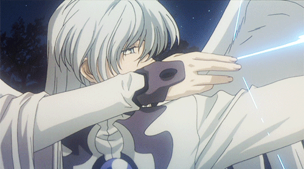
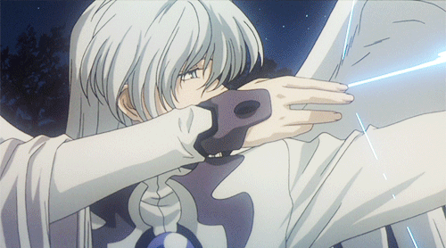

Yue est un jeune homme séduisant aux cheveux longs et argentés qui tombent jusqu'au sol en une queue de cheval lâche. Sa frange est courte et révèle ses yeux bleu glacier. Il porte une robe de soie blanche sertie d'une armure bleu foncé, une boucle d'oreille ornée de bijoux sur son oreille gauche, une longue cape latérale qui tombe sur son épaule droite et une paire de grandes ailes angéliques.
(C'est du wikipedia mais chuuuuuuut.) 

Voici à quoi elle ressemnle hehe :)
J'ai connu l'anime sakura chasseuse de carte depuis ma plus tendre enfance
En effet dès le premier episode je suis tomber amoureuse de cette serie qui a finit par me donner un grand amour pour la decouverte de culture si diversifié.
Je souhaitais donc vous partager cette animé qui m'a tant marquée et qui a façoné une grande partie de ce que je suis à présent